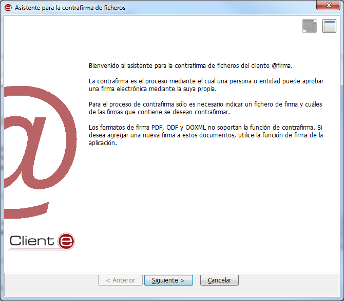
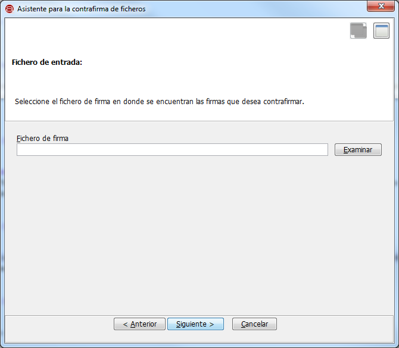
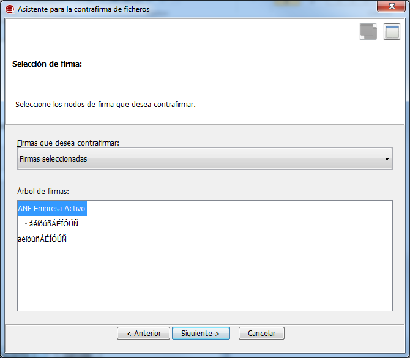

Esta opción nos mostrará el asistente para la generación de una contrafirma electrónica. A lo largo de varios pasos se nos explicará en que consiste esta operación y se nos solicitarán los datos necesarios para ejecutarla:

Al pulsar el botón "Siguiente >" accederemos a la primera pantalla del asistente, en donde deberemos seleccionar el fichero con las firmas que deseemos contrafirmar.

Al pulsar "Siguiente >" no aparecerá una nueva pantalla en donde se nos mostrará el árbol de firmas de documento y deberemos indicar cuáles de ellas queremos contrafirmar.

Las opciones disponibles en esta pantalla son:
Al pulsar el botón "Siguiente >" se nos mostrará un diálogo para la selección del certificado que dese utilizar para la firma. Seleccione el certificado deseado y a continuación se le mostrará un segundo diálogo para el guardado de la multifirma generada o, en caso de error, una ventana con el mensaje de error correspondiente.